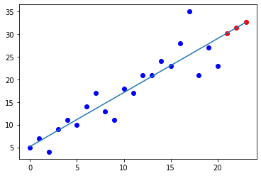

Linear Regression Prediction¶
In a very simple linear regression prediction, we predict numerical values of one variable using the values of a second numerical variable. Here, we have 21 days of Facebook page views and would like to predict how many views we will have in the next three days.
import numpy as np
facebook = np.array([5, 7, 4, 9, 11, 10, 14, 17, 13, 11, 18, 17, 21, 21, 24, 23, 28, 35, 21, 27, 23])
days = np.array(range(0,21))
days
array([ 0, 1, 2, 3, 4, 5, 6, 7, 8, 9, 10, 11, 12, 13, 14, 15, 16,
17, 18, 19, 20])
import numpy as np
from sklearn.linear_model import LinearRegression
x = days.reshape((-1,1))
y = facebook
model = LinearRegression()
model.fit(x, y)
model = LinearRegression().fit(x, y)
The future days are days 21, 22 and 23
ftd = np.array(range(21,24))
future_days = ftd.reshape((-1,1))
To predict the next days, we use the predict function
y_pred = model.predict(future_days)
y_pred
array([30.22380952, 31.41731602, 32.61082251])
Finally, we plot our results including a blue regression line and predicted views in red.
import matplotlib.pyplot as plt
from numpy.polynomial.polynomial import polyfit
# Needed to prolong the line, but is this needed?
f = list(facebook)
yp = list(y_pred)
fy = f + yp
plt.scatter(future_days, y_pred, color='r')
plt.scatter(x, y, color='b')
r = np.array(range(24))
b, m = polyfit(r, fy, 1)
plt.plot(r, b + m * r)
# plt.scatter(future_days, y_pred, color='r')
# plt.scatter(x, y, color='b')
# r = np.array(range(24))
# b, m = polyfit(days, facebook, 1)
# plt.plot(x, b + m * x)
plt.show()
